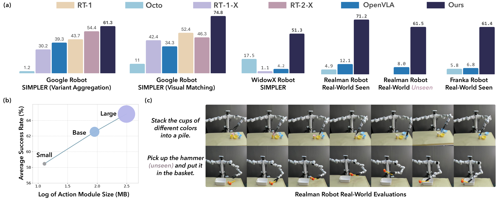
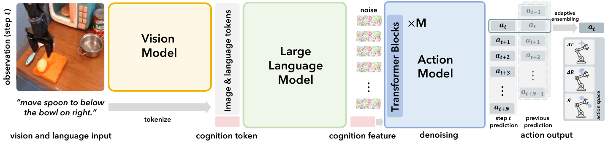
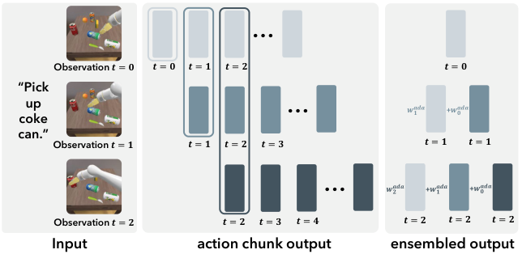
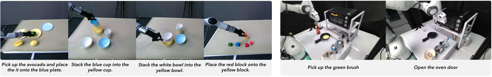

V1. CogACT: A Foundational Vision-Language-Action Model for Synergizing Cognition and Action in Robotic Manipulation¶
0. 읽기 전 약어 및 핵심 용어¶
이 문서를 읽기 전에 아래 약어와 용어를 먼저 정리한다. 이후 본문에서는 괄호 안의 약어를 사용한다.
- Artificial Intelligence (AI): 사람의 지각, 추론, 학습, 의사결정 능력을 기계가 수행하도록 만드는 인공지능 분야를 뜻한다.
- Vision-Language Model (VLM): 이미지와 텍스트를 함께 입력받아 시각-언어 이해나 생성 작업을 수행하는 모델이다.
- Vision-Language-Action (VLA): 시각 관측과 언어 명령을 함께 받아 로봇 action까지 생성하는 모델 또는 학습 패러다임이다.
- Multi-Layer Perceptron (MLP): fully connected layer를 여러 층 쌓은 feed-forward neural network이다.
- Diffusion Transformer (DiT): U-Net 대신 transformer backbone을 사용해 diffusion denoising이나 flow prediction을 수행하는 architecture이다.
- Mean Squared Error (MSE): 예측값과 정답의 차이를 제곱해 평균한 regression loss이다.
- Robotics Transformer (RT): robot observation을 입력받아 action을 예측하는 transformer 기반 robot policy 계열을 뜻한다.
- Robotics Transformer 2 (RT-2): web-scale vision-language knowledge와 robot trajectory를 함께 학습해 action token을 생성하는 VLA 모델이다.
- Robotics Transformer-X model family (RT-X): Open X-Embodiment 데이터 위에서 여러 robot embodiment로 확장한 RT 계열 policy family를 뜻한다.
- Robotics Transformer 2-X (RT-2-X): Open X-Embodiment 데이터로 확장 학습한 RT-2 계열 cross-embodiment VLA policy이다.
- Open X-Embodiment (OXE): 여러 기관, 로봇, task의 demonstration을 묶은 대규모 cross-embodiment robot dataset이다.
- Action Chunking with Transformers (ACT): 여러 timestep의 action chunk를 한 번에 예측해 fine-grained robot manipulation을 학습하는 transformer policy이다.
- Simulation-to-Real Policy Evaluation for Robot Manipulation (SIMPLER): real robot 없이 simulation에서 manipulation policy를 비교 평가하려는 evaluation setup이다.
- General Robot Manipulation with Multimodal Prompts model (VIMA): language, image, video demonstration을 함께 prompt로 받아 robot manipulation task를 수행하는 policy이다.
- Robotics Diffusion Transformer (RDT): diffusion model과 transformer를 결합해 robot action trajectory를 생성하는 robot foundation policy 계열이다.
- Robotics Diffusion Transformer 1B (RDT-1B): 약 1B parameter 규모의 bimanual manipulation diffusion foundation model이다.
- Physical Intelligence pi-zero model (pi0): Physical Intelligence가 제안한 general robot control용 vision-language-action flow model이다.
- Generalist Robot 00 Technology (GR00T): NVIDIA가 humanoid/generalist robot을 위해 공개한 robot foundation model family 이름이다.
- University of Science and Technology of China (USTC): 중국과학기술대학교를 뜻한다.
- Chinese Academy of Sciences (CAS): 중국과학원을 뜻한다.
- Physical Artificial Intelligence (Physical AI): 디지털 공간의 예측을 넘어 물리 세계에서 지각, 예측, 계획, 행동, 안전 검사를 수행하는 AI 시스템을 뜻한다.
1. Metadata¶
| Field | 내용 |
|---|---|
| ID | V1 |
| Title | CogACT: A Foundational Vision-Language-Action Model for Synergizing Cognition and Action in Robotic Manipulation |
| Authors | Qixiu Li, Yaobo Liang, Zeyu Wang, Lin Luo et al. |
| Affiliation / Team | Microsoft Research Asia / Tsinghua University / USTC / CAS |
| Venue / Status | arXiv |
| Date | 2024-11-29 |
| Link | https://arxiv.org/abs/2411.19650 |
| Local source | paper_corpus/sources/V1 |
| Source figures | paper_corpus/figures_source/V1/manifest.md |
2. 핵심 요약¶
CogACT는 VLM 기반 VLA에서 cognition과 action을 분리한 componentized architecture를 제안한다. 기존 RT-2/OpenVLA 계열은 VLM을 action prediction에 직접 재사용하면서 continuous action을 discrete token/bin으로 바꾸는 경향이 있었다. CogACT는 VLM이 visual-language cognition feature를 만들고, 별도의 diffusion transformer action module이 이 feature를 condition으로 multi-step continuous action sequence를 생성하도록 설계한다.
핵심 메시지는 "VLM의 semantic/cognitive generalization은 살리되, dense robot action은 전용 action module이 모델링해야 한다"는 것이다.
3. 왜 중요한가?¶
- OpenVLA와 유사한 7B급 VLM base를 사용하면서 action module 설계만 바꿔 큰 성능 차이를 보인다.
- action discretization 대신 diffusion action transformer를 사용해 continuous, multimodal, temporally correlated action을 다룬다.
- action module size scaling을 체계적으로 비교하고, DiT action module이 log-parameter scale에서 성능이 좋아지는 경향을 보고한다.
- SIMPLER simulation, Realman real robot, Franka real robot까지 여러 embodiment에서 평가한다.
- Adaptive Action Ensemble을 제안해 action chunking/temporal ensemble의 mode averaging 문제를 줄이려 한다.
4. Overall Concept¶

Figure 1. CogACT teaser. CogACT는 VLA의 cognition-action decoupling과 action module scaling이 task success를 크게 높일 수 있음을 보여준다. Source figure: figures/teaser-v8.pdf.
CogACT의 문제 제기는 간단하다. VLM은 이미지와 언어를 잘 이해하지만, 그 출력 언어 토큰 공간은 robot action의 연속적이고 정밀한 제어와 다르다. 따라서 VLM을 action tokenizer처럼 쓰지 말고, VLM은 cognition feature를 만들고 action은 action-specialized module이 생성해야 한다.
5. Architecture Overview¶

Figure 2. CogACT architecture. Vision module, language/cognition module, diffusion action module로 구성되며, inference에서는 adaptive action ensemble을 적용한다. Source figure: figures/method-V3.pdf.
CogACT는 세 부분으로 구성된다.
| Module | 구성 | 역할 |
|---|---|---|
| vision module | DINOv2 + SigLIP | 현재 image observation을 visual tokens로 변환 |
| language/cognition module | LLAMA-2 기반 VLM | visual token과 language instruction을 통합해 cognition feature 생성 |
| action module | Diffusion Transformer | cognition feature를 condition으로 multi-step action sequence 생성 |
vision/language module은 OpenVLA와 유사하게 pretrained VLM을 기반으로 하지만, action prediction은 VLM next-token head가 아니라 dedicated DiT가 담당한다.
6. Problem Formulation¶
CogACT는 language instruction과 visual observation을 받아 future action sequence를 예측한다.
| Notation | 의미 |
|---|---|
| \(\boldsymbol{\pi}\) | VLA policy |
| \(\boldsymbol{l}\) | language instruction |
| \(\boldsymbol{o}_t\) | time \(t\)의 visual observation |
| \(\boldsymbol{a}_t\) | time \(t\)의 robot action |
| \(N\) | future action prediction horizon |
논문은 7-DoF gripper action space를 사용한다.
| Notation | 의미 |
|---|---|
| \(\Delta x,\Delta y,\Delta z\) | end-effector relative translation offset |
| \(\Delta\phi,\Delta\theta,\Delta\psi\) | end-effector rotation change |
| \(g\) | gripper open/close state, \(g\in\{0,1\}\) |
이 formulation은 Open X-Embodiment의 여러 robot을 다루지만, RDT/GR00T처럼 모든 morphology를 일반 unified space로 포괄하기보다는 gripper 7-DoF action setting에 초점을 둔다.
7. Vision-Language Cognition Feature¶
vision module은 현재 image \(\boldsymbol{o}_t\)를 DINOv2와 SigLIP에 넣어 두 종류의 feature map을 만든다.
| Notation | 의미 |
|---|---|
| \(\boldsymbol{f}_t^{\mathrm{DINO}}\) | DINOv2 visual feature map |
| \(\boldsymbol{f}_t^{\mathrm{Sig}}\) | SigLIP visual feature map |
| \(\mathcal{V}\) | serialized visual perceptual tokens |
| \(N_\mathcal{V}\) | visual token length, 논문 default는 256 |
language module은 instruction token, visual token, learnable cognition token을 causal attention으로 처리한다. cognition token에 해당하는 output feature가 action module condition이 된다.
| Notation | 의미 |
|---|---|
| \(\mathcal{T}\) | LLAMA-2 tokenizer로 만든 language tokens |
| \(\boldsymbol{c}\) | learnable cognition token |
| \(\boldsymbol{f}_t^{\boldsymbol{c}}\) | cognition token 위치의 output feature |
| \(\mathrm{VLM}(\cdot)_{\boldsymbol{c}}\) | VLM output 중 cognition token에 해당하는 feature |
8. Diffusion Action Module¶
CogACT의 action module은 cognition feature \(\boldsymbol{f}_t^{\boldsymbol{c}}\)와 noisy action sequence를 input token으로 받아 denoising한다. denoising step 정보 \(i\)는 sinusoidal positional encoding으로 cognition feature에 더한다.
default로 \(N=15\) future steps를 예측하므로, current action 포함 16-step action sequence를 생성한다. action module context length는 cognition token과 action tokens를 포함해 \(N+2=17\)이다.
이 설계는 다음 문제를 겨냥한다.
| Action 특성 | CogACT의 처리 |
|---|---|
| continuous | quantization 대신 diffusion denoising |
| multimodal | distributional action generation |
| temporally correlated | multi-step action sequence prediction |
| high precision | dedicated action module로 VLM token head와 분리 |
9. Training Objective¶
CogACT는 action module이 noise를 예측하도록 end-to-end로 학습한다.
| Notation | 의미 |
|---|---|
| \(\mathcal{L}_{\mathrm{MSE}}\) | diffusion noise prediction loss |
| \(\boldsymbol{\epsilon}\) | ground-truth Gaussian noise |
| \(\hat{\boldsymbol{\epsilon}}^i\) | denoising step \(i\)에서 action module이 예측한 noise |
| \(i\) | diffusion denoising step |
| \(\|\cdot\|_2\) | Euclidean norm |
논문 구현에서는 batch size 256, 8 diffusion steps per sample, learning rate \(2e-5\), 135K+ iterations, 16 NVIDIA A100 GPUs 약 5일 학습을 사용한다. vision module, language module, action module은 모두 end-to-end로 train/fine-tune된다.
10. Adaptive Action Ensemble¶

Figure 3. Adaptive action ensemble. 현재 observation 기반 prediction과 과거 observation 기반 prediction을 similarity weight로 결합한다. Source figure: figures/inference-V2.pdf.
action chunk를 그대로 실행하면 매 step의 최신 visual information을 덜 쓰고, 현재 action만 실행하면 trajectory가 덜 smooth해질 수 있다. ACT의 temporal ensemble은 과거 prediction을 fixed weight로 평균내지만, 서로 다른 action mode를 평균내면 오히려 mode 밖 action이 될 수 있다.
CogACT는 cosine similarity 기반 adaptive weight를 사용한다.
| Notation | 의미 |
|---|---|
| \(\hat{\boldsymbol{a}}_t\) | 실제로 실행할 final action |
| \(K\) | ensemble window size |
| \(\boldsymbol{a}_{t}\mid\boldsymbol{o}_{t-k}\) | 과거 observation \(\boldsymbol{o}_{t-k}\)에서 예측된 time \(t\) action |
| \(w_k^{\mathrm{ada}}\) | adaptive ensemble weight |
| \(\langle\cdot,\cdot\rangle\) | cosine similarity |
| \(\alpha\) | similarity weighting hyperparameter, 논문 default는 0.1 |
직관적으로 현재 prediction과 비슷한 과거 prediction은 더 많이 반영하고, 다른 mode로 보이는 prediction은 덜 반영한다.
11. Training Data and Evaluation Setup¶
CogACT는 Open X-Embodiment(OXE)를 primary training dataset으로 사용한다. OXE는 60 datasets, 22 robot embodiments, 1M+ real-world trajectories를 포함한다. 논문은 Octo/OpenVLA와 유사한 subset을 사용하며, 총 22.5M frames 규모라고 설명한다.
simulation 평가는 SIMPLER에서 수행한다.
| Robot | Setting | Tasks |
|---|---|---|
| Google Robot | Visual Matching, Variant Aggregation | Pick Coke Can, Move Near, Open/Close Drawer, Open Top Drawer and Place Apple |
| WidowX | Visual Matching | Put Spoon on Towel, Put Carrot on Plate, Stack Green Block, Put Eggplant in Yellow Basket |
12. Simulation Results¶
Google Robot SIMPLER 결과에서 CogACT는 Visual Matching 평균 74.8%, Variant Aggregation 평균 61.3%를 기록한다. 이는 OpenVLA보다 각각 40.5%p, 22.0%p 높고, 55B RT-2-X보다 작은 7.6B 모델로도 평균 성능을 앞선다.
| Setting | RT-2-X | OpenVLA | CogACT |
|---|---|---|---|
| Google Robot, Visual Matching | 46.3% | 34.3% | 74.8% |
| Google Robot, Variant Aggregation | 54.4% | 39.3% | 61.3% |
| WidowX, Visual Matching | n/a | 4.2% | 51.3% |
이 결과는 VLM base 자체보다 action module 설계가 VLA success rate에 큰 영향을 줄 수 있음을 보여준다.
13. Real-World Evaluation¶

Figure 4. Real-world evaluation environments of Realman robot and Franka robot. Source figure: figures/task-realmanv2.pdf.
Realman robot에서는 Pick, Stack, Place 세 가지 task를 평가한다. fine-tuning data는 총 391 demonstrations이며, evaluation setting과 동일한 demonstration은 매우 적다.
| Model | Realman Task Avg. |
|---|---|
| Octo-Base | 4.9% |
| OpenVLA | 12.1% |
| CogACT | 71.2% |
unseen table/distractor setting에서도 CogACT는 평균 58.4%, unseen colors/shapes/categories에서는 평균 64.6%를 기록한다.
Franka robot에서는 4개 task에 대해 task당 100 demonstrations를 수집해 fine-tuning하고, 11 trials로 평가한다.
| Model | Franka Avg. |
|---|---|
| Octo-Base | 5.8% |
| OpenVLA | 6.8% |
| CogACT | 61.4% |
14. Ablation: Action Module Scaling¶
CogACT의 중요한 기여는 action module scaling 실험이다.
| Action model | Params | Average success |
|---|---|---|
| MLP, 3-layer | 3M | 50.6% |
| MLP, 7-layer | 89M | 52.5% |
| DiT-Small | 13M | 58.5% |
| DiT-Base | 89M | 62.5% |
| DiT-Large | 308M | 64.8% |
같은 89M parameter에서도 DiT-Base가 MLP 7-layer보다 훨씬 높다. 논문은 DiT action module의 평균 success rate가 model size의 log scale에 대해 거의 선형적으로 증가한다고 해석한다.
multi-step action prediction도 중요하다.
| Future steps | Average success |
|---|---|
| 0 | 42.8% |
| 3 | 55.5% |
| 15 | 62.5% |
| 31 | 51.2% |
너무 짧으면 temporal correlation을 못 쓰고, 너무 길면 오히려 성능이 떨어진다. default \(N=15\)가 가장 좋다.
Adaptive Ensemble도 기존 action chunking/temporal ensemble보다 높다.
| Strategy | Average success |
|---|---|
| Action Chunking | 50.7% |
| Temporal Ensemble | 58.9% |
| Adaptive Ensemble | 62.5% |
15. Physical AI / World Model 관점¶
CogACT는 world model을 명시적으로 학습하지 않는다. 그러나 physical AI 관점에서는 "cognition과 action을 어떻게 interface할 것인가"라는 핵심 문제를 다룬다.
| 관점 | CogACT의 의미 |
|---|---|
| cognition-action gap | VLM의 semantic feature와 dense motor action 사이의 간극을 action module로 메운다. |
| action multimodality | diffusion action module로 여러 feasible trajectory mode를 표현한다. |
| temporal consistency | future action sequence와 adaptive ensemble로 smooth control을 강화한다. |
| scaling | VLM 크기만 키우는 대신 action module scaling도 효과적임을 보인다. |
world model 스터디에서는 CogACT를 "미래 상태를 예측하는 모델"이 아니라 "VLM cognition을 action distribution으로 변환하는 motor decoder 설계"로 읽으면 좋다.
16. 기존 논문들과의 연결¶
| 연결 논문 | 연결 포인트 |
|---|---|
OpenVLA (D5) |
VLM을 직접 action token prediction에 쓰는 방식과 componentized action module의 대비 |
RT-2 / RT-X (G6, D1) |
web/VLM knowledge transfer와 robot action prediction의 연결 |
Diffusion Policy (P1) |
continuous multimodal action generation |
RDT-1B (P3) |
cognition/action 분리와 DiT action module의 유사성 |
pi0 / GR00T N1 (P4, P6) |
VLM/flow/diffusion action module을 결합하는 최신 VLA 흐름 |
VIMA (G3) |
transformer 기반 multimodal prompt/action modeling |
17. 한계와 주의점¶
- action space는 7-DoF gripper 중심이라 humanoid/dexterous hand generalization은 직접 다루지 않는다.
- OpenVLA 대비 큰 성능 향상을 보이지만, real-world evaluation task 범위는 여전히 tabletop manipulation에 가깝다.
- end-to-end fine-tuning은 compute cost와 data engineering 부담이 있다.
- adaptive ensemble은 similarity 기반 heuristic이므로 failure mode나 stability guarantee는 추가 분석이 필요하다.
- world dynamics나 long-horizon planning을 명시적으로 모델링하지 않는다.
18. 발표 구성 제안¶
- OpenVLA/RT-2식 action tokenization의 한계를 제기한다.
- cognition-action decoupling 직관을 인간의 cognition/motor cortex analogy와 함께 설명한다.
- architecture figure로 VLM cognition feature와 diffusion action module을 연결한다.
- action formulation, 7-DoF action vector, diffusion loss를 설명한다.
- adaptive ensemble을 ACT temporal ensemble과 비교한다.
- SIMPLER, Realman, Franka 결과를 OpenVLA 대비로 보여준다.
- action module scaling ablation으로 "VLA scaling은 VLM만의 문제가 아니다"라고 정리한다.
19. 토론 질문¶
- VLM final token을 action에 직접 쓰는 방식과 cognition token을 condition으로 쓰는 방식의 차이는 어디서 가장 크게 나타날까?
- action module이 커질수록 성능이 좋아진다면, robot foundation model scaling law는 VLM과 action decoder를 따로 봐야 할까?
- Adaptive Ensemble은 서로 다른 action mode를 얼마나 잘 구분할 수 있을까?
- RDT/GR00T처럼 embodiment-aware design을 추가하면 CogACT가 더 확장될 수 있을까?
- world model을 붙인다면 cognition module 앞에 붙이는 것이 좋을까, action module 뒤 rollout model로 붙이는 것이 좋을까?
20. 한 문장 정리¶
CogACT는 VLM의 cognition 능력과 diffusion transformer의 action modeling 능력을 분리/결합함으로써, 기존 VLA의 action discretization 한계를 크게 줄인 componentized VLA 모델이다.